This 4-tabbed panel displays each worklist details, its members, its members statuses and a
reassignment functionality.
- The worklist details tab shows the “Deliver assignment” button to deliver the concepts
to be translated to the translator’s inbox or whoever has been assigned, according to the
operating workflow.
- The Members tab shows members is a list as well as the status of each worklist
member:
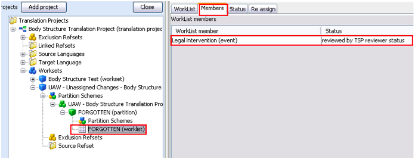
- In this tab you may also see a worklist member history by double-clicking on the
selected concept. Alternatively, you may select a worklist member and then click the “View
member history” button:
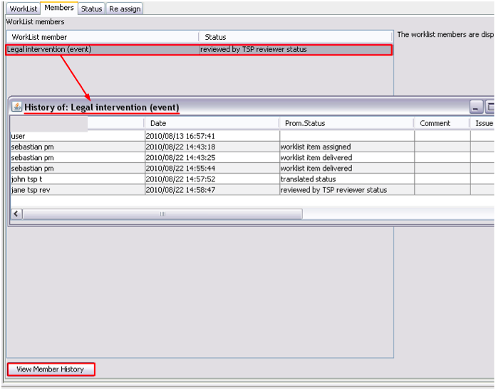
- A new window is displayed showing a table with the author of every change, the date and
time, the status of the concept at a given point, and any comments/issues related to this
concept.
- The Status tab on the right panel will show the number of worklist items with a given
status and the worklist members with the selected status:
Worklist generation and assignment
REMEMBER! A worklist is a partition that has been assigned to a specified workflow and
will follow the steps (roles) of that workflow
You have already created partitions from your worksets. Now you will have to assign them to a
user (translator, reviewer, etc.) and submit this worklist to him/her, following a
workflow:
- Select a partition in the left panel. Its details will be displayed on the right
panel.
- Click “Generate worklist” button. Alternatively, you may open the WorkLists tab and
click “Generate worklist” button there:
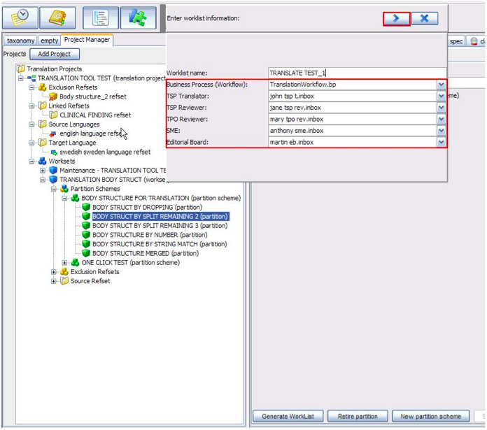
- You will have to define the worklist name, the workflow and the persons involved in that
workflow.
- A message is displayed when the worklist has been created.
- The new worklist will be displayed on the left under the selected partition. The
worklist members are displayed on the right pane, under the Members tab, with their
statuses (in this case, assigned):
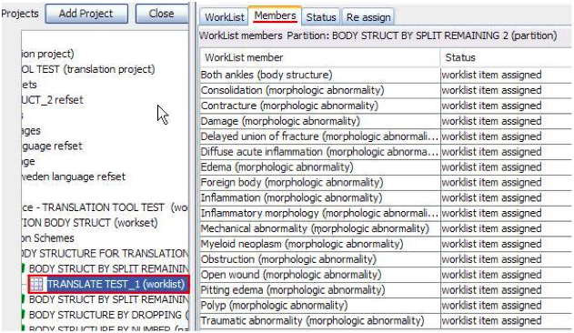
- The Status tab will show two windows: the one on the left will list the statuses of a
given worklist. By clicking on a status, the worklist members with the selected status
will be displayed on the right:
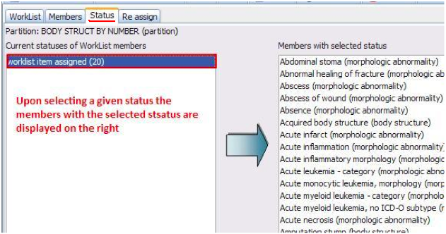
- The worklist contains the concepts to be translated. Once they have been assigned to the
TSP translator (or whoever in the translation workflow) they must be submitted to his/her
inbox.
- Select a worklist and click the ‘Deliver assignments’ button on the worklist details
panel.
- A delivery message appears as soon as the worklist has been submitted to the inbox of
the specified person.
- Finally, the Reassign tab allows assigning concepts to another member of the translation
team:
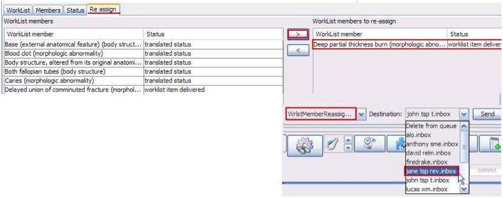
- One or more concepts from a worklist may be selected and reassigned to another person by
clicking the “>” button, and then specifying the new destination. You must click “Send”
button to deliver the new assignment. Due to the workbench functionality, the
re-assignment option is actually a “request for re-assignment”: The Project manager has
created a worklist that has been assigned to the translator John, but he has now decided
to reassign a concept from this worklist to the TSP reviewer Jane. However, the item to be
reassigned is in John’s inbox:
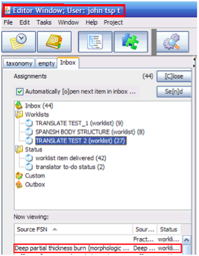
- In spite of having been reassigned to Jane, the concept will not be shown in her inbox
until it is “taken away” from John’s inbox:
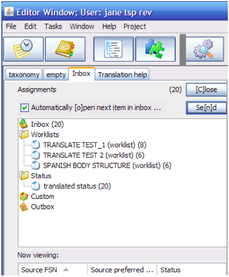
- In order to do this, either the Project Manager or John must login as “John tsp t” and
open his Inbox. The reassigned concept will automatically disappear from John’s Inbox and
will be displayed in Jane’s:
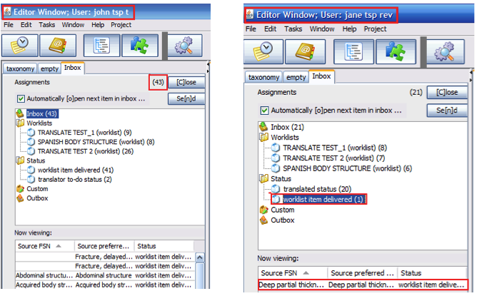
- In order to be reassigned, the first assigned member of the translation team must open
his/her inbox to effectively submit the reassigned worklist item(s) to the newly designed
recipient.
- Only worklist items with status “Delivered” can be reassigned. Otherwise, a warning
message will be displayed indicating that the worklist item(s) cannot be reassigned:
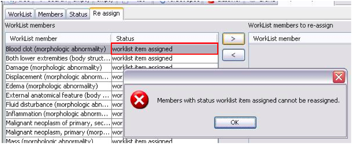
- A refresh button has been added to update the concepts included in a worklist, which may
have been changed since worklist creation.
"Assassin" process
- The re-assign tab also has an option for deleting members from delivered worklists.
- As an example, the translator has a concept “Dislocation (morphologic abnormality) in
his/her inbox. You are the project manager and you decide that this concept should not be
translated for this release. Therefore, you may open the Re-assign tab in the worklist
details pane and select the option “Delete from queue” instead of selecting another person
in the workflow and click “Send” button.
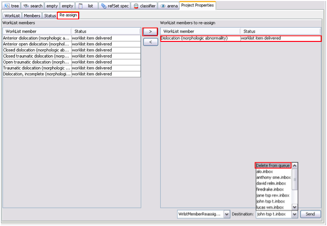
- The next time that the translator opens his/her inbox, “Dislocation (morphologic
abnormality)” will have been deleted from his/her worklist.
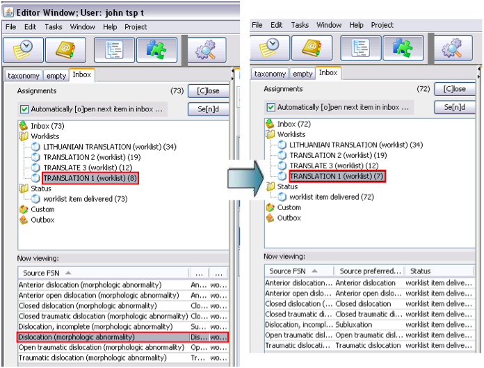